Overview
In this project, we built a rasterizer for files that contain vector graphics. Vector graphics, unlike jpeg and png files, define the relationships between points and lines that comprise an image, allowing for infinite scalability without loss of fidelity, as proportionality is constantly maintained. Our rasterizer initially could only render simple triangles, rife with jaggies. Throughout the project, we implemented three main techniques that addressed the jaggies and improved the quality of the image.
It was interesting to see how relatively simple techniques like supersampling could greatly improve the quality of the renderings. Just sampling more areas of a pixel grid and averaging the samples together allowed us to emulate the effects of a box filter on the image. It was also really cool to see how textures could easily be mapped by just using simple coordinate transformations.
Section I: Rasterization
Part 1: Rasterizing single-color triangles
To rasterize triangles:
- Identify the bounding box: find the min x and y values and max x and y values from the 3 pairs of (x, y) coordinates given as input to rasterize_triangle(). If min x < 0, set it to 0 so the bounding box begins at the left edge. Similarly, if min y < 0, it’s set to 0 so the box begins at the top edge. If max x >= width of output, set it to width - 1 so the bounding box ends at the right edge. Similarly, if max y >= height of output, set it to height - 1 so the bounding box ends at the bottom edge.
- Iterate through every pixel in the bounding box of width (max x - min x) and height (max y - min y).
- For each pixel, perform the point-in-triangle test with a sample point at the center of the pixel (pixel_x + 0.5, pixel_y + 0.5). The point-in-triangle test is in a helper function inside(). inside() performs three line tests and checks if every line test has L(x, y) >= 0. Being >=0 means the point is either on the edge or inside the edge, which is crucial because it ensures samples on the boundary of a triangle are drawn. Prior to the line tests, we check that the x0 value is less than, or left of, x1. If not, we swap the value of the two points p0 and p1 in order to maintain consistency with the vector orientations. We also check whether the points were defined in the clockwise or counterclockwise direction by performing a line test with the final point after calculating the first two lines. The direction of the points determines whether we look for all of the values to be positive (in the counterclockwise direction) or negative (clockwise), in accordance with the direction of the norm vector, as mentioned earlier, the third point must be considered “inside.”
- If the pixel is determined to be inside by inside(), fill_pixel() is called with this pixel’s x and y coordinates and color as input.
This algorithm performs no worse than one that checks each sample within a bounding box because it first identifies the bounding box of the triangle and then reduces the size of the search box if parts of the triangle are outside the output size. Then, after the search box has been determined, the algorithm checks every sample in the search box of the triangle. In the worst case, it checks every sample in the bounding box of the triangle. In the best case, it checks very few to no samples if the triangle’s location is almost outside or entirely outside the output image.
Image result|
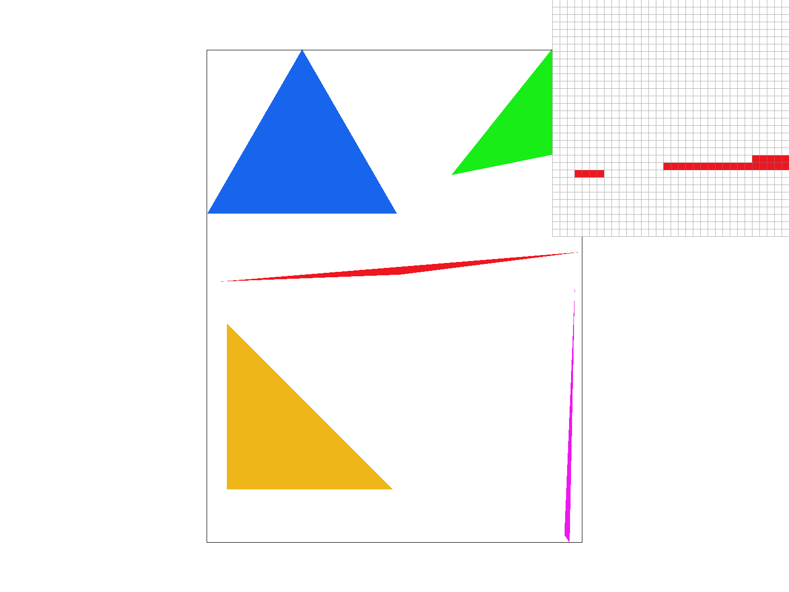
|
Extra credit
Below were the optimizations implemented:
- Pulling out redundant arithmetic operations: particularly those in the helper function inside(), for calculating things like dx0, dx1, dx2 that stayed the same for all samples within the bounding boxes of a triangle. This allowed for the calculation of these values to be done once instead of for every pixel inside the bounding box.
-
Not checking every sample in the bounding box.: We implemented an incremental triangle traversal pattern that capitalized on the geometry of the triangle. When rendering a triangle row by row, once we leave the inside of the triangle we will never return back to the triangle in the same row. Thus, for every row in the bounding box, a tracker keeps track of we’ve been inside the triangle and stops checking the rest of the row if the row has had pixels inside the triangle and is now outside the triangle. This cut down on the number of pixels searched in almost every row, and was particularly useful for triangles that were vertically long.
This optimization is based off the incremental triangle traversal proposed in lecture, as shown below.
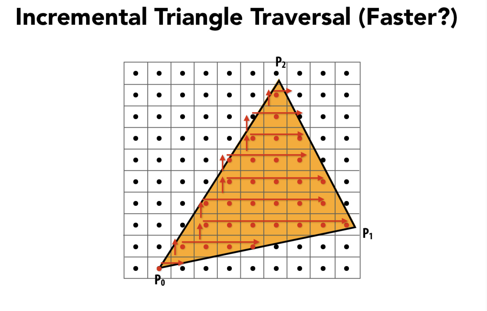
- Removing unnecessary calculations: To optimize for this task, time-consuming calculations like square root calculations needed for super sampling were removed. This helped give an extra speed boost and worked well on top of the other two optimizations.
| Regular implementation runtime (ms) | Optimization 1: Factoring redundant arithmetic operations out of loops runtime (ms) | Optimization 2: Not checking every sample in the bounding box runtime (ms) | Optimization 3: removing unnecessary supersampling steps runtime (ms) | Combined three optimizations runtime (ms) | |
|---|---|---|---|---|---|
| test3.png | 115.345 | 100.057 | 89.301 | 108.394 | 71.957 |
| test4.png | 85.500 | 73.576 | 62.012 | 82.124 | 55.302 |
| test5.png | 85.833 | 70.350 | 65.347 | 81.240 | 52.987 |
| test6.png | 76.202 | 69.470 | 58.432 | 75.192 | 51.023 |
Part 2: Antialiasing triangles
Supersampling processThe supersampling algorithm rasterizes the image at a higher resolution and then performs downsampling by averaging results within a pixel area to the output resolution. This is made possible by the sample buffer, which gets resized according to the sample rate to allow for rasterizing at higher resolutions and allows for easy downsampling and transferring of supersamples to the frame buffer. Instead of iterating through every pixel in a bounding box for a triangle and checking if the center of it is inside a triangle like task 1, we iterate through multiple locations within a pixel area and check if these locations are inside and store the results inside the sample buffer. At the end of the pipeline, when resolving to the frame buffer, each frame buffer pixel is set to the corresponding sample buffer N x N grid area’s percent of grid locations inside the triangle multiplied by the color.
There are three major parts of the algorithm: supersample memory management, the supersampling process, and the resolving to frame buffer process.
To manage supersample memory, the below changes were made to the pipeline:
- Set_sample_rate(): to allow for sampling at sqrt(sample_rate) * sqrt(sample_rate) grid locations, the sample buffer is resized to width * sqrt(sample_rate) * height * sqrt(sample_rate) instead of width * height. This allows us to store every sample in a memory location pointed to be a sample buffer during supersampling. A call to clear_buffers() is added at the end so that the sample buffer is cleared of any old content now that we’re sampling at a new sample rate.
- Set_framebuffer_target(): modify this function to call clear_buffers() to clear the sample buffer and frame buffer at the end of the method.
To implement triangle supersampling, the below additions and changes were made to the pipeline:
- Rasterize_triangle(): find the bounding box using the same method as task 1. Then, instead of just checking if the center of each pixel in the bounding box is inside the triangle, we divide each pixel into an N x N grid of sample locations and chcek each of the grid areas. Set the corresponding sample buffer location to the input color for every grid location that is inside the triangle.
- Fill_pixel(): given that the sample buffer now is resized to allow for enough space to hold all grid locations in supersampling, the method is modified to take an index as input to denote the index in the N x N grid of a single pixel area where the supersample is. Then, the color is set in sample_buffer[(y * width + x) * num_grid_rows + index], where num_grid_rows equals sqrt(sample_rate) and denotes the N value in the N x N grid.
To resolve to the frame buffer, the below changes were made:
- Resolve_to_framebuffer(): this function was modified to transfer the values from the sample buffer to the frame buffer by downsampling. It iterates through every index of the frame buffer and finds the corresponding N x N grid of colors stored in the sample buffer. It sets the frame buffer value at that index to the average color of the N x N grid, which is determined by summing up all the color values of the N x N grid and then dividing by the size of the grid (which is equal to N x N, where N = sqrt(sample rate)). The colors from the sample buffer are converted from Color objects to 8-bit values for each component.
Supersampling is useful because it helps with anti-aliasing to create a high quality image that doesn’t have frequencies above the Nyquist frequency. This is particularly useful for very sharp edges in images, which can appear significantly smoother with supersampling as shown in the below screenshot results. For these triangles, supersampling was added in rasterize_triangle() to help reduce aliasing and create smoother lines and overall higher quality images.
Image results|
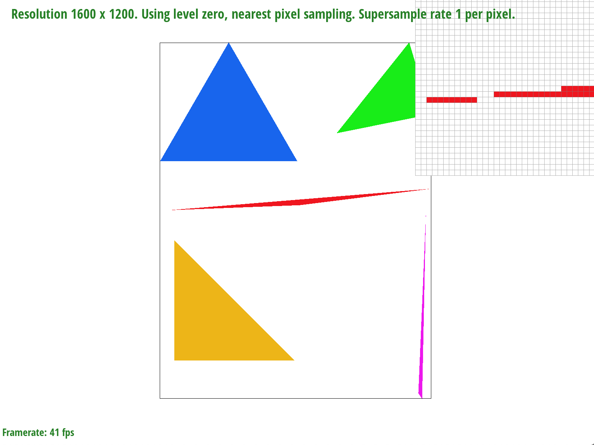
|
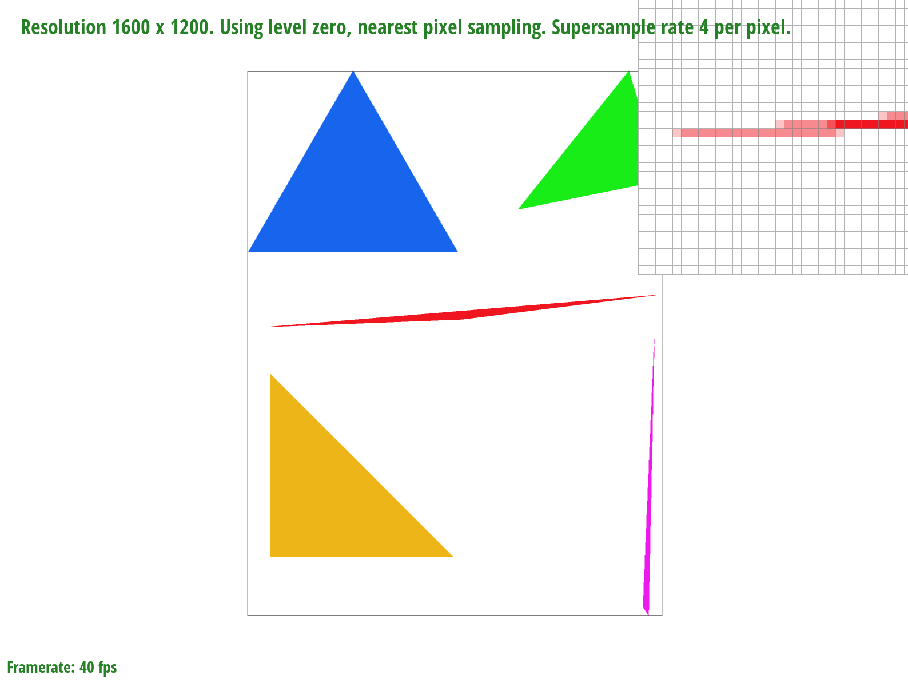
|
|
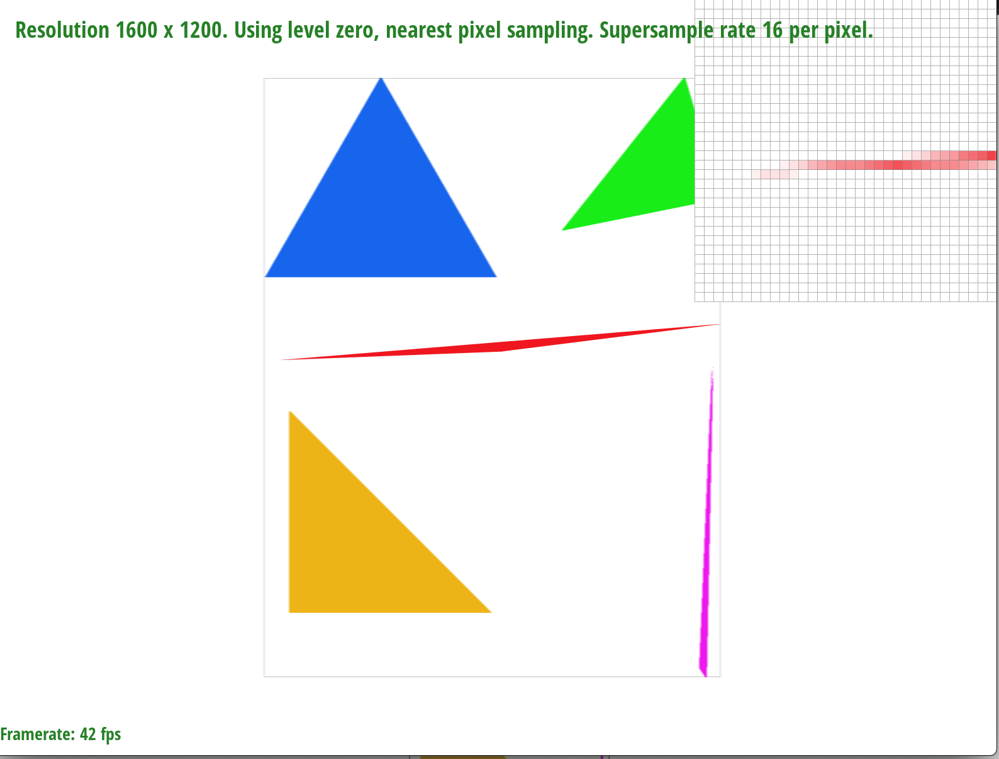
|
As the sample rate is increased, the edges get blurred because we are sampling many times per pixel instead of just once. This effect is particularly noticeable over skinny triangle corners because a pixel that is partially inside a triangle may not be considered “inside” a triangle using the naive rendering method from task 1 simply because the center of the pixel isn’t inside the triangle would now be colored with a lighter color with supersampling because taking multiple samples within the pixel would make it likelier that some samples will detect that the pixel is partially inside the inside. As the same rate increases, the detection of whether a pixel is partially inside the triangle improves, giving better and more blurred edge results that result in smoother pictures.
Extra CreditWe implemented jittered sampling, which supersamples by splitting the pixel area into a N x N grid with N = sqrt(sample rate) like the regular task 2. Instead of taking the center of each square in the grid and checking if it is inside the triangle, however, it takes a random location. This jittering overall allows for more variation in the locations tested for being inside the triangle, which can help reduce aliasing in the final output image. Comparing the two, jittered sampling results in more jagged edges for a sample rate of 1 but has overall smoother blending results for larger sample rates as seen in the comparison between the two results for sample rate 16.
|
|

|
|
|

|
|
|

|
Part 3: Transforms
For this part, we implemented transforms to allow us to translate, scale, and rotate various parts of the robot in different ways by creating the standard 3x3 matrices used to implement these transforms.
The cubeman is doing a head slide, which is a breakdance technique :) (see the reference picture for comparison)
|
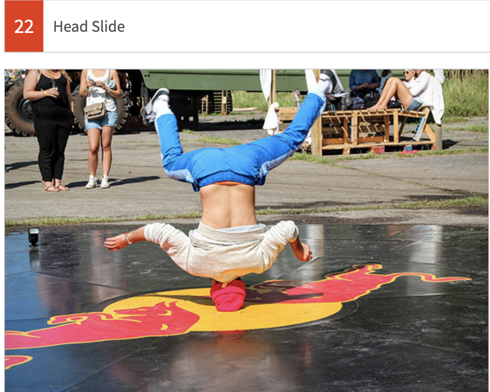
|
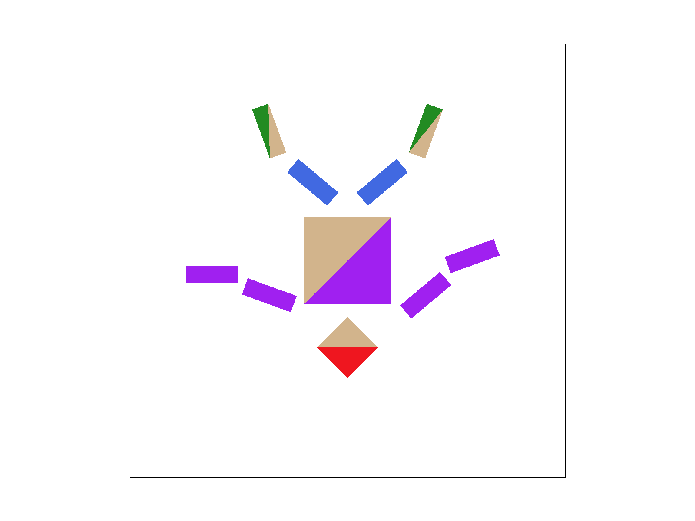
|
Section II: Sampling
Part 4: Barycentric coordinates
Barycentric coordinates are coordinates that are inherently related to triangles through interpolation. If you have triangle vertices A, B, and C, each with their own value (can be of various types–we use Color in this project), you can calculate the value of any point within the triangle with the equation V = aA + bB + cC, where a, b, and c are coefficients that add up to 1. We can use the formula in the picture below to solve for a and b, and then subtract them from 1 to get the last coefficient. This finds the weight of each of the vertex values that comprise any other point in the triangle.
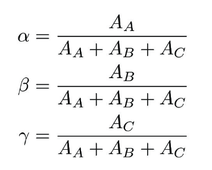

|
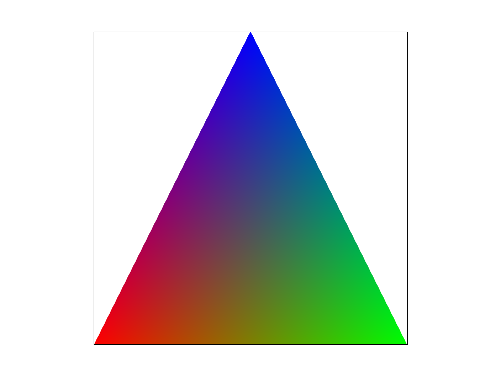
|
This triangle was defined by the positions of its three vertices, and the colors red, green, and blue. All the other colors in the gradient are the result of calculating the barycentric coordinates and using the coefficients as weights for the color values. Since barycentric coordinates can interpolate the values within a triangle, you get the proportional mixture of RGB at each point within the triangle, depending on their proximity to the vertices. On the left side, pure red and blue make purple, and on the right, blue and green make teal. In the middle of the triangle, the colors appear muddled since red, green, and blue are all being added but none of the colors dominate.
Part 5: "Pixel sampling" for texture mapping
Pixel sampling is the process by which we calculate our final texture sample value given a mipmap level and u, v coordinates. The (u, v) coordinates fall between 0 and 1, representing the location on the texture space. In order to calculate these (u, v) coordinates, we used the barycentric formula to calculate the location on the triangle that we were looking for. Then, we scaled each of the three (u,v) coordinate pairs, given in the definition of the problem, according to the coefficients given by the barycentric calculation.
In nearest pixel sampling, we looked at the given mipmap level, and, given the scaled (u, v) values, multiplied them by the width and height of the mipmap. Then, because the texel values are discrete integers, we used the round() function to get the nearest texel value. We then returned the Color value of that texel.
For bilinear pixel sampling, we again started by multiplying by the passed in (u, v) values by the width and height of the given mipmap level. Next, we calculated the texel coordinates of the nearest four texels, determined by taking each combination of ceiling and floor on the scaled (u,v) texture coordinates. Then, we called get_texel() on each of the four coordinates to get the Color value stored at each. By using the linear interpolation function, or lerp, we were able to get the proportion of each of the four Colors that would comprise the final sampled color. The two initial lerps were used to find the horizontal position, and the third was to retrieve the vertical value.
Between the two, nearest is the most straightforward--it requires fewer computations and directly copies the Color value of the closest texel without nuance. Nearest tends to result in sharper edges, at the expense that if they are too thin, they may disappear, especially at lower sampling rates. Bilinear pixel sampling is smoother and softens an image, but it can make edges seem blurry.
|
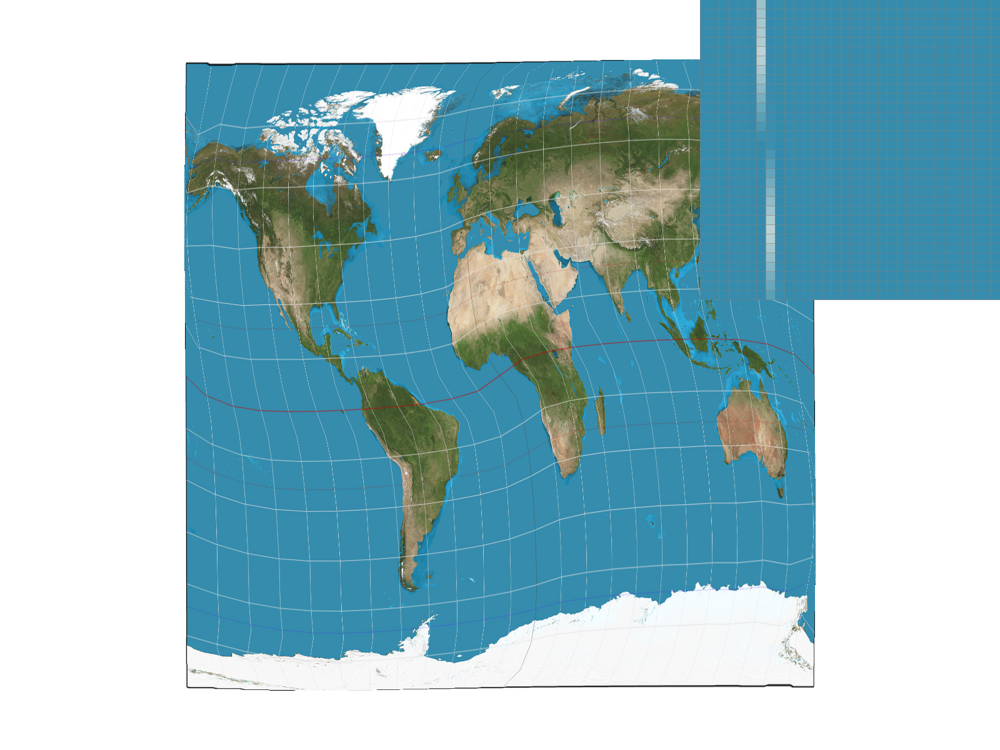
|
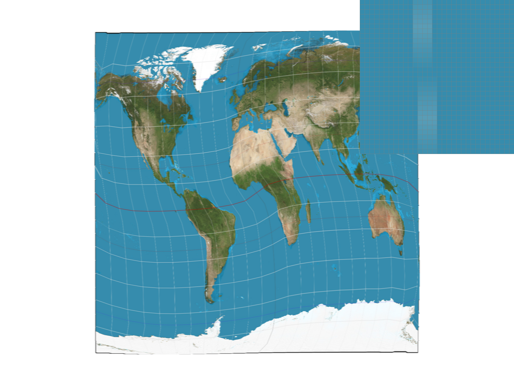
|
|
|
|
In the nearest sampling examples, you can see that the lines on the globe get broken up into dashes instead of being a contiguous line. This is an unfortunate effect of nearest, which only takes one texel into account. While supersampling improves the effect a bit, there are clear places where the line starts and finishes. Looking at the bilinear sampling, the lines are nearly continuous and smooth. These differences become most apparent when the sampling rate is low and there are many thin edges or color changes that comprise the image, or it contains many high frequencies. Bilinear sampling smooths edges and makes for an overall softer appearance.
Part 6: "Level sampling" with mipmaps for texture mapping
Level sampling is the process of determining which mipmap level to sample from in a series of minified textures. Mipmaps are versions of the original texture with progressively lower resolution. Overall, storing mipmaps leads to the increase of memory usage, but the processing benefits outweigh this storage cost. These are heavily utilized in game engines, which rely on maintaining efficient performance while balancing graphic fidelity. This was a popular technique for console games such as Super Mario 64 and early Zelda titles, which were heralded in their time.
We implemented three different level sampling methods for comparison: level zero, nearest, and linear. The level zero was implemented in the previous section and always uses the texture level 0, which is of the highest resolution. While these images appeared crisp, they did not take advantage of the benefits that using mipmaps offer. The other two level sampling methods, nearest and linear, both relied on calculating the partial derivatives (du/dx, dv/dx) and (du/dy, dv,dy) and finding the max of the norm of these coordinates. The corresponding level is the log base 2 of that value. This was implemented in the get_level() function of the texture.c file.
In nearest level sampling, we rounded the raw value returned by get_level() and passed that to the function that was handling pixel sampling. To ensure that the mipmap levels were valid, we checked that the value fell between 0 and mipmap.size()-1, inclusive. If the level was below 0 or above the max number of levels for that texture, we defaulted to the min or max respectively.
To perform linear level sampling, we again got the raw value from get_level(). Then, we took the ceiling and floor of our result, giving us the two levels, which are integer values, being sure to check that they were in range. The linear aspect of this method involves appropriately weighing the pixel sample values of these two levels returned from either of the pixel sampling methods from part 5. We weighed the samples by their distance from the lower level: for example, if the level was 5.3, the ceiling and floor would be 5 and 6. We then calculated the difference between the level and the floor, then used that proportion for the higher texture, and the remaining proportion for the lower. In the given example, this would use .3 of the value sampled from mipmap level 6 and .7 from level 5. As a sanity check, you can see that 5.3 is closer to 5, so we should weigh that level more heavily in the final sample value.
|
|
|
|
|
|
|
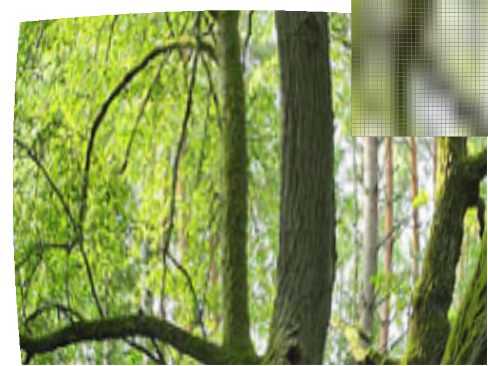
|
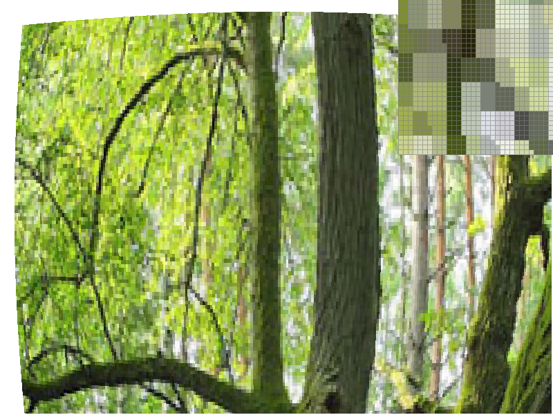
|
Tradeoffs
Samples per pixel: Within pixel sampling, increasing the supersampling rate drastically affects the speed of the rasterization. It also takes more memory, since the size of the sample buffer must increase to accommodate all of the samples taken for a single (x, y) coordinate. However, increasing the supersampling rate drastically improves aliasing in the image, significantly smoothing out jagged edges.
Pixel sampling: For pixel sampling, nearest pixel sampling has decent speed and but has low antialiasing power compared to other sampling techniques because only looks at a single nearest pixel value and often many neighboring texels are needed to obtain good antialising results. Bilinear pixel sampling has high antialising power because it considers the nearest four texels in the interpolation process, allowing for great results. However, this is one of the slowest sampling techniques because it has to locate and interpolate several texel values.
Level sampling: Linear level sampling has high antialising power because it checks the neighboring mipmap levels, but is also one of the slowest techniques. Nearest level samping produces fewer aliasing artifacts compared to just level 0 sampling and is faster than the bilinear sampling techniques, but doesn’t have as high of an antialiasing power because it doesn’t consider neighbor texels. Storing mipmaps takes more memory, but has major improvements when it comes to producing the best image. The combination of linear level sampling and bilinear pixel sampling is trilinear texture filtering, which has the best graphic quality and antialiasing power but takes the most time.